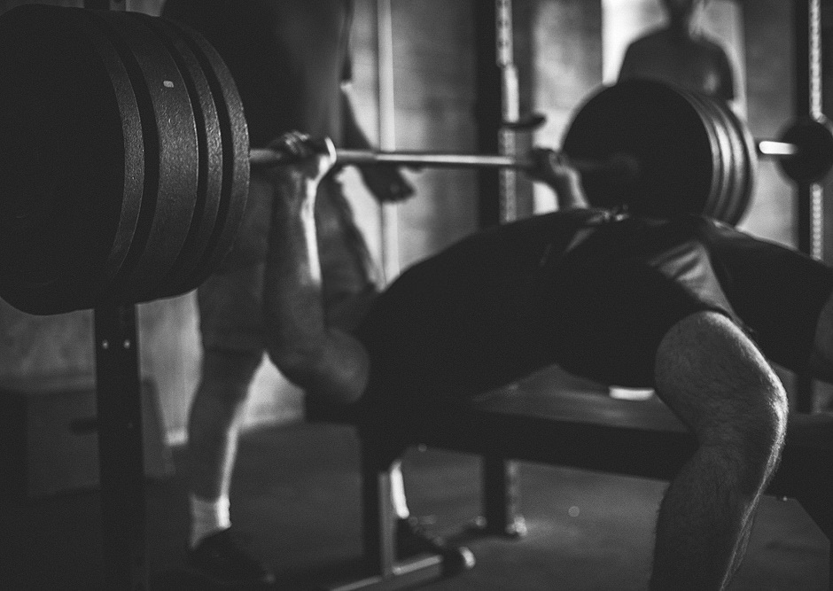
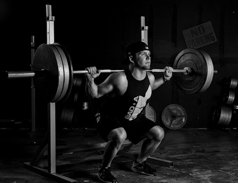
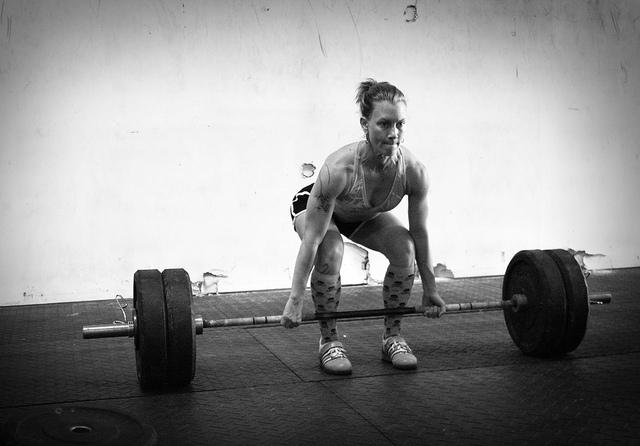

Visit our Diet Page for in insight into proper nutriton AND Sign Up for free recipes!
The BIG 3
This page is a short introduction to The Big 3, which earn their rank amongst the most rewarding exercises for a number of reasons. When performing any exercise, listed on this page or not, it is key that you utilise proper form. As a general rule of thumb, you should always "stand proud" with your chest out, shoulders back and your (lower) back straight! Stances and grips vary, but shoulder-width is often applicable or at least viable - but you should always research new exercise.
So, what are the benefits of the so-called "Big 3":
- Compound movements: This means they are multi-joint exercises and that performing these movements (CORRECTLY) utilises the entire body. Any workout should be based around one of these major compound movements.
- Strength: Stimulating the entire body in this way promotes "all kinds of gains"; from strength, size and a better function CNS (central nervous system), to the release of naturally occurring hormones. This leads to better performing body in all aspects of day to day life, and can actually improve the longevity of your joints and such.
- Skill: People mistake weightlifters as meatheads with more muscle than brain cells, but like any sport, there is a level of skill and dedication required to achieve results. If performed incorrectly, the big 3 can set you up for permanent injury; if performed skilfully, you will look like a badass and discover a myriad of benefits.
- Bragging Rights...: Competition is healthy! And if you can deadlift a car, who isn't going to be impressed!
If you plan on incorporating any of these movements into your workout and haven't done them before, we recommend visiting Youtube to study correct form and execution techniques. Clicking the header to each exercise will also transport you to a useful tool over at bodybuilding.com, where you can also explore a whole range of exercises and complete routines!
The Bench Press
The bench press is typically a favourite in the gym, and the first call of order when it comes to bragging rights. And rightly so - as one of The Big 3, the bench press is a feat of strength and should be incorporated into your workout no matter what your goal, and plays a major role in upper-body development. As with any compound movement, the bench requires full-body recruitment and as such should be performed cautiously - that is unless you want to snap up your shoulders, back, elbows AND chest, all in one go! Proper form should always be a priority, and a training partner is advised both for feedback and tricky situations (it's cool to lift two times your body weight but it isn't cool to get squashed by it...).
The Squat
The squat is even bigger than the bench press, although you've probably heard all the jokes about leg day. With a fear of getting squashed and pain for days to come, legs are the first thing people try to skip. What they might not know, or choose to ignore, are the benefits that a strong pair of legs and a good squat reap. As well as triggering the release of growth hormones - (you heard right - squatting helps your upper-body grow!) - big, strong legs are the foundation of any aesthetic and healthy physique. If you don't squat then you're missing out on big performance gains! Again, proper form is key in maintaining healthy elbows, knees and posture - follow a structured routine and prioritise form over everything!
The Deadlift
The deadlift. The big, bad boss of the big 3, and ALL the lifts. It even sounds menacing, right? In fact, the "dead" part of deadlift simply describes lifting the weight from the floor - i.e. a dead weight. It is, however, any strongman or powerlifter's biggest lift, with pros like Eddie Hall lifting - insane - amounts. They are the embodiment of strength and the purest form of compound movement;considered as a genuine full-body movement - recruiting every single fibre and ounce of mental-grit in your body. For these reasons, most people require more recovery time after a deadlift session. It taxes the CNS heavily, and whilst this is great the strength, size and refining motor-patterns, overdoing it can quickly bring about debilitating problems in the legs and lower back.